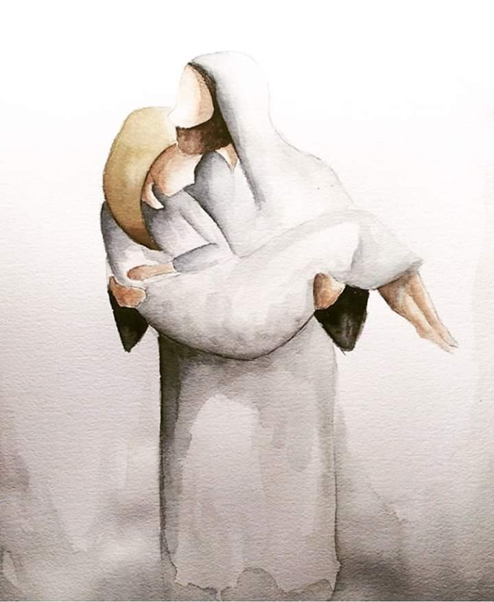

My name is Allison Winder. I am from Seattle, Washington and I love the Pacific Northwest. Here is a little information about me! I have four younger siblings. I am graduated from Mount Si High School and then am going to Brigham Young University. I made a funny video with my roommates.
I then went on a full-time mission for the Church of Jesus Christ of Latter-Day Saints in Utah and Brazil.
I loved my mission and afterwards returned to BYU where I am planning on majoring in Information Systems

Here is my favorite picture of Jesus. If you want to know more about the Church of Jesus Christ of Latter-Day Saints, press here.
Contact Information: 425-334-1265 or allwin123@gmail.com